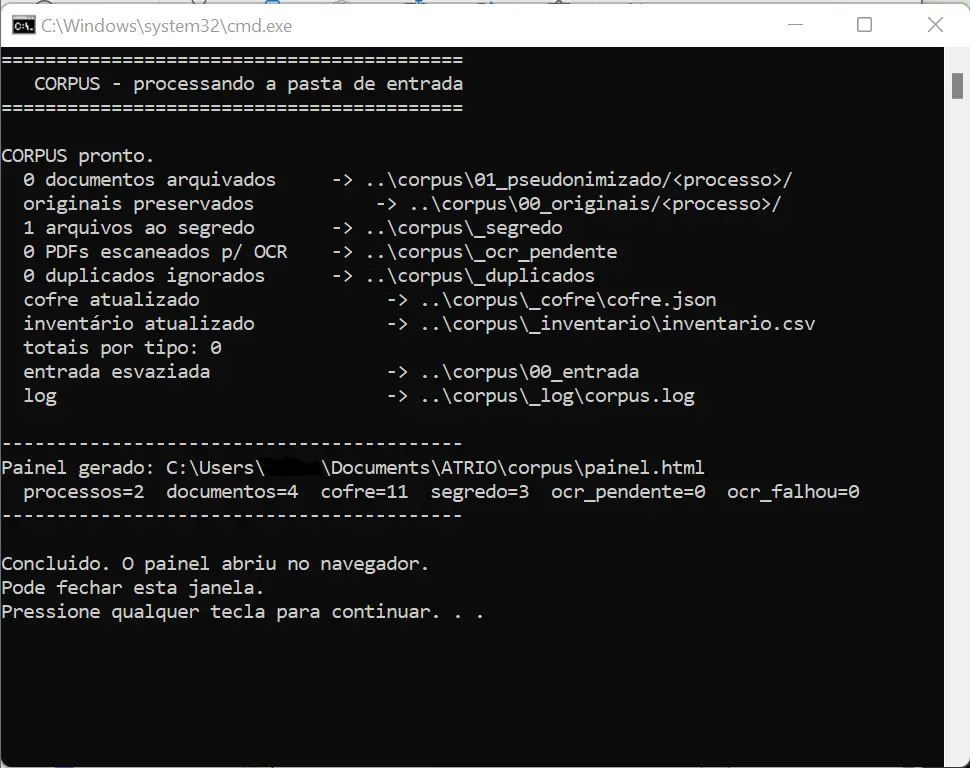
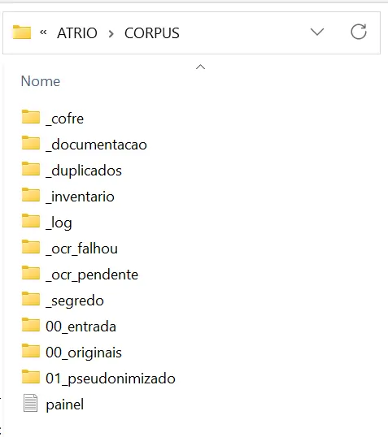

CORPUS
memória documental governada
Antes de acelerar o jurídico, é preciso governar o raciocínio
Arquitetura de raciocínio via inteligência orquestrada para gestão de acervo, raciocínio e revisão crítica, preservando decisão humana rastreável.
Regência recursal sob controle do operador. O modelo não substitui o juízo: torna o percurso verificável.
O modelo redige. A regra governa. O operador decide.
memória documental governada
formulação decisória faseada
confronto crítico do raciocínio
refinamento formal sob limite
Preliminares
Uma arquitetura modular de IA para organizar documentos, articular raciocínio jurídico, revisar formulações e refinar textos — sempre sob controle humano.
Porque velocidade não garante consistência. O ATRIO confere método ao percurso entre documentos, raciocínio e texto.
CORPUS organiza a memória; RATIO estrutura a formulação; CERNE confronta o raciocínio; LUX refina a forma final.
Em operações jurídicas com volume, repetição, complexidade decisória, revisão qualificada e necessidade de controle do percurso.
O juízo humano. O ATRIO apoia a produção e torna seu percurso rastreável e governável.
Problema
Falha quando acervo, linguagem, raciocínio e fluxo perdem lastro comum.
A IA aumentou a velocidade da produção jurídica. Nem sempre aumentou, na mesma proporção, a qualidade do raciocínio que deveria sustentá-la.
O gargalo não está apenas na redação. Está no que vem antes: organizar o acervo, formular a hipótese, revisar a coerência e preservar o caminho percorrido.
Sem rastro e sem lastro, a minuta pode soar jurídica sem estar suficientemente fundamentada.
Texto bem escrito pode esconder fundamento frágil, lacuna decisória ou precedente sem pertinência material.
A base documental perde força quando não é classificada, preservada, recuperável e vinculada ao percurso da decisão.
Quando o controle humano aparece apenas no fim, a revisão vira chancela, não governança do raciocínio.
Entradas, hipóteses e revisões espalhadas por ferramentas distintas dificultam reconstruir o percurso decisório.
Objetivo
O ATRIO organiza o caminho entre memória documental, elaboração, auditoria e forma final.
A decisão assistida precisa permanecer uma sequência de escolhas verificáveis, não uma entrega opaca.
O sistema separa o que costuma se misturar. Cada módulo tem função própria, limite próprio e ponto de controle humano.
A promessa central não é automatizar a decisão. É tornar visível o caminho pelo qual ela pode ser formulada, testada e revisada.
Quatro operações autônomas compõem uma cadeia única.
O juízo humano permanece no eixo; a IA organiza, sugere, tensiona e refina dentro de limites definidos.
Construção
Entradas, operações, saídas e pontos de controle. Cada módulo ocupa uma função precisa na arquitetura.
01 · Módulo
memória documental governada
A base entra crua e fica limpa antes de a IA tocar em qualquer coisa.
Recebe o acervo, organiza, protege e dá lastro ao material que alimenta os demais módulos.
Entrada
Decisões em PDF · detecção de escaneado + OCR
Opera
Extrai → pseudonimiza → inventaria
Risco
Dado pessoal na entrada · segredo segregado
Saída
Base limpa · inventário · cofre
Fonte e destino do pipeline: um loop fechado de conhecimento governado. A anonimização irreversível da saída permanece na outra ponta, com o LUX.
02 · Módulo
formulação decisória faseada
A decisão se forma em fases, com escolha humana em cada uma.
Estrutura problema, hipótese, fundamentos e minuta. Cada fase deixa rastro e nenhuma avança sem decisão humana.
Entrada
Caso, peças e parâmetros
Opera
Estrutura, compara e formula
Risco
Avanço sem lastro · travas por fase
Saída
Minuta rastreável
Três vias permanecem isoladas: Recurso Inominado, Embargos de Declaração e Mandado de Segurança.
03 · Módulo
confronto crítico do raciocínio
Tensiona a formulação antes de sua forma final.
Identifica lacunas, avalia riscos e confronta precedentes sem pertinência material, convertendo fragilidade em achado técnico.
Entrada
Formulação e hipóteses
Opera
Audita, tensiona e qualifica
Risco
Fluência que esconde fundamento frágil
Saída
Achados e gate técnico
O módulo devolve um estado de avanço: avança, avança com ajuste, revisão humana, bloqueio parcial ou bloqueio total.
04 · Módulo
refinamento formal sob limite
Refina a forma sem inventar fundamento e reforça a proteção da saída.
Ajusta clareza, tom, coesão e acabamento sobre a estrutura já validada, sem tocar no mérito.
Entrada
Peça aprovada
Opera
Limpa, calibra e refina
Risco
Mérito intocado · proteção reforçada
Saída
Texto final controlado
A entrega ocorre em três blocos: texto marcado, lista de alterações e versão final limpa. Quando a melhoria formal encosta no mérito, o sistema para.
Critérios
Governança, rastreabilidade, delimitação de função e proteção do dado operam sobre todo o fluxo.
A qualidade do sistema não depende apenas da resposta que produz, mas das condições sob as quais pode avançar.
Nenhuma etapa sensível deve prosseguir sem controle do operador. O caminho precisa permanecer visível, os papéis precisam estar delimitados e o dado precisa ser protegido nas duas pontas.
Esses critérios não são módulos adicionais: são regras transversais da arquitetura.
A IA pode organizar, sugerir, tensionar e formular, mas não assume o juízo.
O que entrou, onde surgiu dúvida, qual alternativa foi apresentada e quando o operador decidiu.
Cada módulo opera dentro de um escopo e não invade o papel do seguinte.
Pseudonimização na entrada, segregação de segredo e anonimização irreversível na saída.
Rastro para saber como chegou. Lastro para saber por que chegou.
Aplicação
Cada módulo respondeu a uma ausência concreta e converteu o problema em arquitetura, ferramenta e critério operacional.
memória documental governada
Acervo público sem API, disperso e tecnicamente inacessível.
Pipeline em Python com captura, OCR, deduplicação, pseudonimização, inventário e cofre apartado.
115.114 decisões reorganizadas em base governada, sem depender de equipe de TI.


O documento deixa de ser arquivo solto e passa a integrar uma base governada. Disponibilidade pública não equivale a acessibilidade técnica; acesso sem governança não equivale a reuso seguro.
formulação decisória faseada
Produção jurídica avançando diretamente para a minuta.
Máquina de estados, fases, hard stops, proveniência e validação expressa do operador.
Três vias isoladas, oito estados de fase e sete travas verificáveis.
A força está menos na minuta e mais na rota: quem validou, em que ponto, com base em quê e sob qual pendência.
confronto crítico do raciocínio
Boa redação podendo ocultar fragilidade material.
Critério de impacto, auditoria, confronto de achados e gate técnico.
Fragilidades acopladas passam a emergir antes da forma final.


Fonte, raciocínio e estilo são separados. Só há achado quando o risco afeta tese, conclusão, fundamento, regime jurídico ou autoridade do precedente.
refinamento formal sob limite
Revisão formal capaz de alterar silenciosamente mérito ou dado.
Fronteira dura entre forma e mérito, modos de circulação e anonimização irreversível.
Clareza e proteção sem perda do lastro do texto de origem.
Na dúvida entre alterar e preservar, preserva. Clareza sem usurpação.
Achados
O ATRIO nasce de rotina recursal, acervo volumoso, revisão qualificada e pressão por padronização sem perda de critério.
Base documental
115.114
decisões · 2ª Turma Recursal TJPR
Decisões extraídas, deduplicadas e organizadas em memória documental governada.
Recorte
2018–2026
acervo histórico
Período coberto pela base documental construída para o sistema.
Fluxos
3
RI · ED · MS
Três vias processuais isoladas, cada uma com gramática e estados próprios.
Conversão
59,3%
voto / despacho
Maior índice da Turma entre assessores de volume comparável no recorte observado.
Evolução agregada
+6 p.p.
adotantes · base dez–fev → mar/2026
O índice médio dos adotantes subiu de aproximadamente 46% para 52% após a adoção institucional.
Leitura metodológica: o dado indica associação temporal com a operação do sistema, mas não isola causalidade.
A evidência é apresentada como indício de rotina governável, não como prova autônoma de superioridade.
Calendário próprio de dias úteis, feriados e suspensões do TJPR.
Da captura à base governada: Selenium sobre o DOM do TJPR, deduplicação em pandas, pseudonimização com spaCy, OCR, inventário auditável por hash e cofre apartado.
Autoria
Nascido em gabinete recursal, o ATRIO converte prática institucional em arquitetura documentável.
Arquitetura de raciocínio assistido por IA, com memória governada, formulação faseada, confronto crítico e refinamento sob controle humano.
Permanecer no ATRIOMetodologia de instalação que organiza rotina, papéis, materiais, critérios, triagem e memória antes da automação.
Abrir ECHOUm autor, dois projetos: a narrativa que liga echo e ATRIO, com repertório de competências e currículo.
Ver o percurso